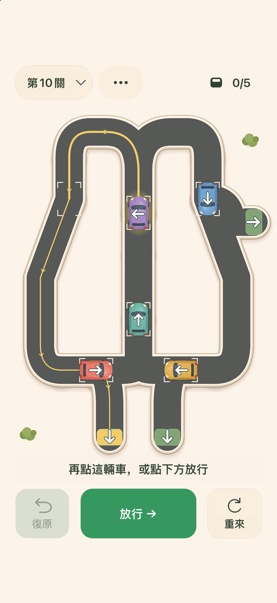

先看完整路線
點選小車，沿著黃線看一遍。它可能繞回來，也可能路過一個出口繼續前行。
給思考，留一點空位
看清路線，安排順序，留出剛剛好的空位。一款可以慢慢琢磨的單機邏輯解謎遊戲，讓每輛小車找到自己的出口。
即將登陸 App Store前12關免費體驗，一次購買解鎖額外48關。
輕輕一點，想好下一步。
01 / 找到通行的節奏
點選小車，沿著黃線看一遍。它可能繞回來，也可能路過一個出口繼續前行。
只有隊首能走。看好下一條車道的空位，決定誰先出發，誰再等一等。
走錯了可以復原，也可以重來這一關。沒有計時，每個想法都來得及慢慢試。
02 / 一段小小的旅程
從簡短的上手練習，到環路、共用車道和交叉路口。一點空位的變化，就可能帶來不同的通行結果。
一次App內購買，永久解鎖目前第13—60關。無訂閱，支援家庭共享，具體以Apple的共享設定為準。不承諾未來新增內容。
購買和恢復購買需要連接Apple服務。遊玩進度不會在裝置之間同步。
關於玩法、購買，或怎樣繼續上次的進度，都可以在這裡找到協助。